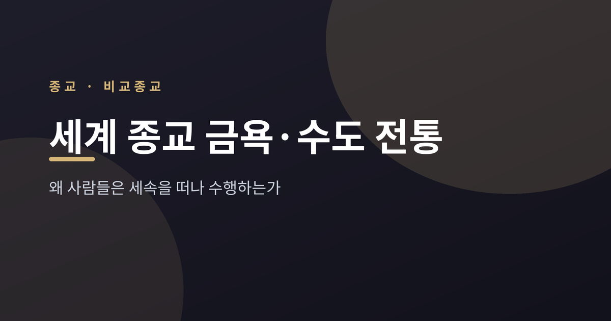
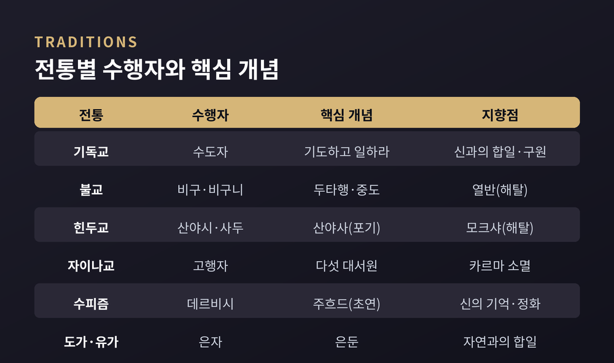
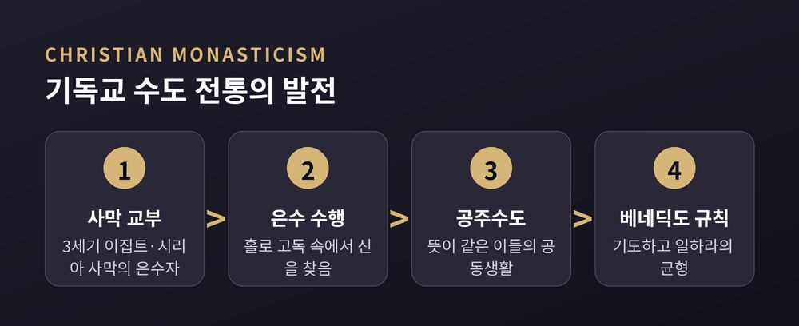
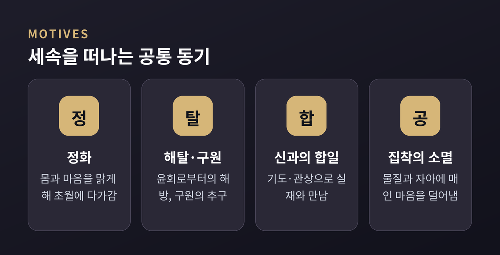
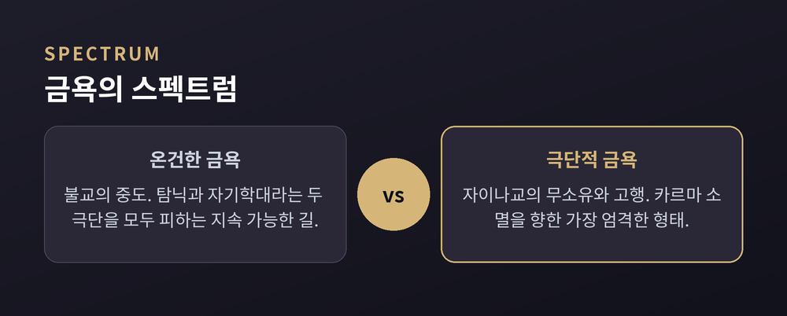
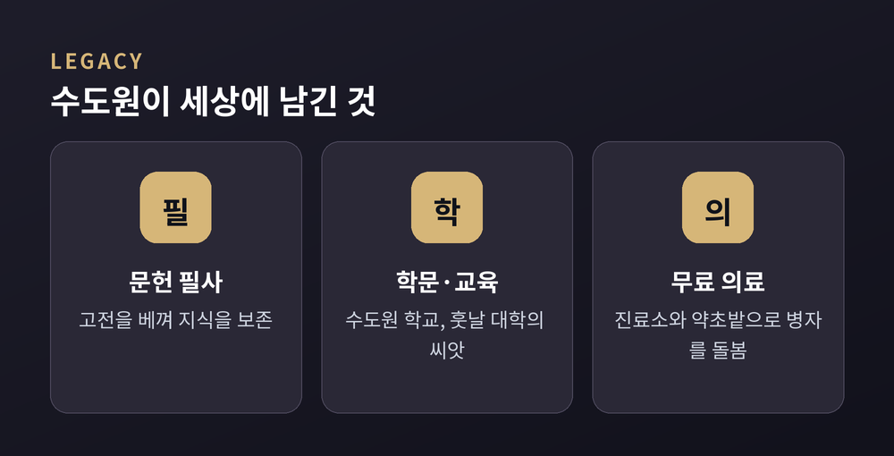

세계 종교 금욕·수도 전통 비교 — 왜 세속을 떠나 수행할까

이번 글에서는 세계 여러 종교에 공통으로 나타나는 수도·금욕 전통을 비교해 보겠습니다. 특정 신앙을 옹호하거나 비판하려는 글이 아닙니다. 사람들이 왜 안락한 세속을 뒤로하고 수행의 길을 택했는지, 종교학의 시선으로 차분히 살펴보려 합니다.
먼저 결론을 짧게 말씀드립니다. 금욕과 수도는 한 종교만의 것이 아닙니다. 기독교, 불교, 힌두교, 자이나교, 이슬람 수피즘, 그리고 중국의 도가와 유가까지 — 서로 멀리 떨어진 전통들이 놀랄 만큼 닮은 물음을 품고 있었습니다. 몸을 내려놓아야 무엇을 얻는가. 이 물음이 이 글의 축입니다.
금욕과 수도, 말부터 정리합니다
먼저 두 낱말을 구분하겠습니다.
금욕(asceticism)은 영적 목표에 이르기 위해 육체적·심리적 욕구를 스스로 부정하는 실천입니다. 어원은 그리스어 '아스케오', 곧 '훈련하다'라는 뜻입니다. 운동선수가 몸을 단련하듯, 영적 목적을 위해 자신을 연마한다는 발상인 셈입니다.
수도(monasticism)는 그보다 제도화된 형태입니다. 평신도나 일반 성직자를 넘어서는 규칙에 따라 살고자 하는 사람들의 운동이지요. 수도자는 대개 독신이고 금욕적이며, 사회에서 물러나 홀로 은수하거나 뜻이 같은 이들과 공동체를 이룹니다.
두 실천의 밑바탕에는 하나의 생각이 깔려 있습니다. 몸과 마음이 영적 진보를 가로막는 짐일 수 있다는 것. 그래서 그것을 다스리고 단련하려 합니다. 종교학자들은 대부분의 종교가 이런 금욕적 요소를 어느 정도 지닌다고 말합니다.
전통마다 다른 얼굴, 같은 뿌리
이제 전통별로 그 얼굴을 나란히 놓아 보겠습니다.

기독교는 사막에서 시작했습니다. 3세기부터 이집트와 시리아의 사막으로 들어간 은수자들을 '사막 교부'라 부릅니다. 이들이 동방과 서방 수도제의 뿌리가 되었습니다.
불교는 승가라는 출가 공동체를 이룹니다. 비구와 비구니는 계율에 따라 독신과 무소유의 삶을 삽니다. 여기에 '두타행'이라는 자발적 고행이 더해집니다. 숲에 살고 걸식으로만 먹고 누더기를 입는, 번뇌를 '털어내는' 수행입니다.
힌두교에는 인생 네 단계가 있습니다. 학생기, 가주기, 임서기를 지나 마지막이 '산야사', 곧 완전한 포기의 단계입니다. 세상을 등진 수행자를 산야시 또는 사두라 부릅니다. 그는 스스로 자신의 장례를 치른 셈 치고 사회적 지위를 모두 내려놓습니다.
자이나교는 가장 엄격한 쪽에 섭니다. 불살생·진실·불투도·정결·무소유라는 다섯 대서원을 수행자는 완전한 절제로 지킵니다. 어떤 분파의 남성 수행자는 옷조차 걸치지 않고, 부드러운 빗자루 하나 외에 아무것도 지니지 않습니다.
이슬람 수피즘에는 '주흐드'가 있습니다. 세속적 쾌락에 무관심해지고 검소하게 사는 태도입니다. 다만 주흐드는 수피즘의 한 측면일 뿐, 수피즘 전체가 금욕으로 환원되지는 않는다는 점은 짚어 두겠습니다.
중국에서는 은둔이 하나의 전통이었습니다. 도가는 세상을 떠나 자연으로 물러나는 은자를 그렸고, 유가는 조금 달랐습니다. 군주가 어질면 나아가 섬기고, 무도하면 조용히 물러나는 '조건부 은둔'이었지요. 장자는 산속 독거의 자만보다, 덕을 지닌 채 눈에 띄지 않게 사는 편이 낫다고 보았습니다.
기독교 수도는 어떻게 자라났나
한 전통을 조금 더 따라가 보겠습니다. 기독교 수도제의 흐름입니다.

처음은 사막의 고독이었습니다. 도시의 안락을 떠나 홀로 신을 찾는 은수의 길이었지요. 시간이 지나며 홀로가 아니라 함께 사는 공동생활, 곧 공주수도의 형태가 자랐습니다.
6세기에 누르시아의 베네딕도가 『수도규칙』을 남깁니다. 그는 사막 교부와 앞선 스승들의 지혜를 자신만의 통찰로 재구성했습니다. 이 전통의 정신을 압축한 말이 '오라 엣 라보라', 곧 '기도하고 일하라'입니다.
여기서 노동은 단순한 생계 수단이 아니었습니다. 관상과 기도 중심의 삶을 지탱하는 균형추였습니다. 하루를 기도와 노동과 휴식으로 나눈다는 발상이 그렇습니다. 흔히 '기도 여덟 시간, 노동 여덟 시간, 수면 여덟 시간'으로 요약되지만, 규칙서의 실제 시간 배분은 계절에 따라 달랐다는 점은 덧붙여 둡니다.
그들은 왜 세속을 떠났을까
이제 이 글의 물음으로 돌아옵니다. 무엇이 사람들을 세속 밖으로 이끌었을까요.

종교학은 몇 가지 공통된 동기를 꼽습니다.
하나는 정화입니다. 몸과 마음을 맑게 해 초월적 실재에 다가가려는 마음이지요. 다음은 해탈과 구원입니다. 힌두교와 불교가 말하는 모크샤와 열반, 곧 윤회로부터의 해방이 여기에 닿습니다. 기독교와 이슬람이 향하는 구원도 결이 통합니다.
신과의 합일도 큰 동기입니다. 기도와 관상, 디크르 같은 수행을 통해 신적 실재와 만나려는 갈망입니다. 마지막은 집착과 번뇌의 소멸입니다. 물질과 자아에 매인 마음을 덜어내려는 것이지요. 불교의 두타행, 자이나교의 무소유, 수피의 주흐드가 모두 이 자리에 모입니다.
전통마다 언어는 다릅니다. 그러나 '지금의 나를 덜어내야 더 큰 무엇에 이른다'는 방향은 서로 닮아 있습니다.
금욕에도 폭이 있습니다
금욕이라고 다 같은 금욕은 아닙니다. 온건함과 극단 사이에 넓은 폭이 있습니다.

한쪽 끝에는 불교의 '중도'가 있습니다. 붓다는 깨달음 이전 여섯 해 동안 극심한 고행을 했습니다. 그러나 자기학대가 무익함을 깨닫고, 탐닉과 학대라는 두 극단을 모두 피하는 길로 돌아섰습니다. 불교는 온건한 금욕은 지키되 극단적 자기학대는 분명히 배격합니다.
반대쪽 끝에는 자이나교가 있습니다. 무소유의 서원, 오랜 단식, 그리고 삶의 마지막에 음식과 물을 끊고 평온히 죽음을 맞는 서원까지 — 금욕의 가장 강한 형태가 여기 있습니다. 이는 전통 내부의 논리, 곧 카르마를 소멸하고 영혼을 정화한다는 관점에서 이해됩니다.
한 가지 더 흥미로운 갈래가 있습니다. 사회학자 막스 베버가 말한 '세속 안의 금욕'입니다. 수도원을 떠나 세속의 직업 노동 자체를 신에 대한 봉사로 삼는 방향이지요. 세속을 떠나지 않고도 금욕이 가능하다는 이 발상은, 개혁 전통에서 가장 철저하게 나타났습니다.
세상을 떠난 이들이 세상에 남긴 것
세속을 등진 수행이 정작 세속에 큰 자취를 남겼다는 점은 짚어 둘 만합니다.

중세 유럽의 수도원이 그렇습니다. 수도자들은 필사실에서 고전을 베껴 냈습니다. 성경과 함께 아리스토텔레스와 갈레노스, 유클리드와 프톨레마이오스가 그 손끝에서 살아남았습니다.
의료도 있었습니다. 많은 지역에서 수도원은 무료로 치료받을 수 있는 유일한 곳이었습니다. 부속 진료소가 수도자와 마을 사람을 함께 돌봤고, 약초밭이 식물학 지식을 지켜 냈습니다. 수도원 학교는 훗날 대학과 르네상스로 이어지는 씨앗이 되었습니다.
물론 이 모든 것이 금욕의 전부를 설명하지는 못합니다. 수행의 중심은 어디까지나 내면에 있었고, 사회적 기능은 그 곁에서 자란 열매에 가깝습니다. 그 균형을 어떻게 볼지는 전통마다, 사람마다 다를 것입니다.
정리하면 이렇습니다. 세계의 수도·금욕 전통은 서로 다른 말로 같은 방향을 가리켰습니다. 덜어냄으로써 더 큰 것에 이르려는 마음입니다.
비움은 잃음이 아니라, 다른 채움을 위한 자리를 내는 일이다.
세속을 떠난 이들이 무엇을 보았는지 우리는 다 알 수 없습니다. 다만 그들이 던진 물음만은 지금도 유효합니다. 무엇을 내려놓을 때 우리는 비로소 가벼워지는가 — 이 물음 앞에서라면, 어느 전통의 답이든 한 번쯤 귀 기울여 볼 만하다고 생각합니다.